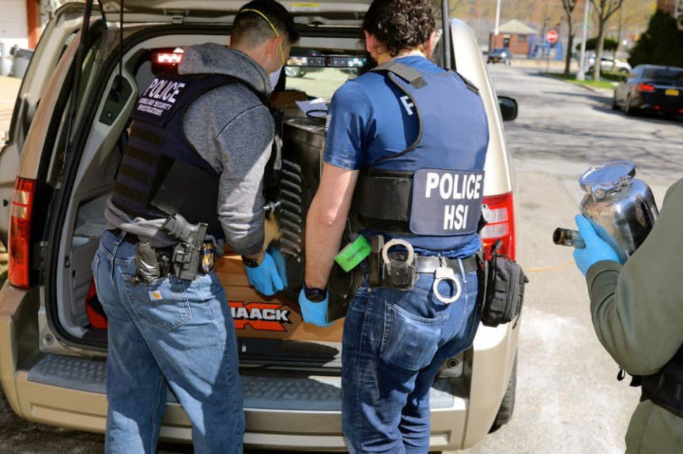
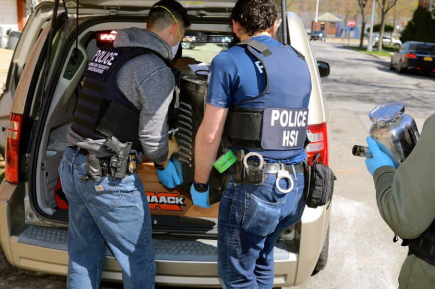

Oregon Man Admits Selling Marijuana and Laundering Bitcoin
~3 min read | Published on 2022-01-23, tagged Cryptocurrency, DarkWeb, Darkweb-Vendor, Drugs, Money-Laundering, Pleaded-Guilty using 580 words.
An Oregon man admitted selling marijuana on the darkweb and laundering Bitcoin.
Robert Kelly O’Neill, 59, pleaded guilty to possession with intent to distribute marijuana and money laundering. O’Neill’s case, along with many others, came from the investigation conducted as a part of the so-called “Operation Dark Gold.” In January 2016, Homeland Security Investigations (HSI) and the U.S. Postal Inspection Service (USPIS) launched a widespread investigation into darkweb vendors, according to announcements from both agencies. During the investigation, HSI and USPIS employees identified a darkweb vendor known as “Gold” who exchanged Bitcoin for cash.
Gold advertised money laundering services wherein darkweb vendors would send Gold Bitcoin and Gold would ship cash to a physical address provided by the vendor. Such a scheme is ripe for infiltration by law enforcement; if they were able to take control of Gold’s accounts, they could passively collect the addresses of darkweb vendors.
Of course, that is exactly what law enforcement did during the operation. In late 2016, HSI investigators identified and arrested Gold. An HSI special agent in New York took control of Gold’s money-laundering operation, including vendor accounts and related profiles. While pretending to be Gold, investigators identified an individual using the alias “Resinate” who routinely used Gold’s services.

As a part of Operation Dark Gold, law enforcement agencies had arrested more than 35 individuals by 2018. They had identified 65 targets by the time the US Department of Justice published a press release about the operation. Some of the arrested vendors included:
“TheSource” aka “BonnieNClyde” “Sawgrass” aka “Ross4Less” aka “ChristmasTree” “TrapGod” “XanaxMan” “Cannabars” and “TheFastPlug”
Resinate had Gold mail cash to several addresses in or around Springfield, Oregon. Records kept by Gold revealed that from between September 2015 and May 2018, Resinate had laundered more than $725,000 in illicit proceeds through Gold. Information obtained towards the end of the investigation revealed that Resinate had laundered $167,000 in Bitcoin through a co-conspirator in Springfield. Additionally, records from Silk Road and Silk Road 2.0 revealed that in 2013 and 2014, Resinate had earned $390,000 in Bitcoin by selling marijuana.
In June 2018, feds executed search warrants at addresses Resinate had given Gold as well as O’Neill’s Springfield residence. O’Neill had a marijuana processing and packaging operation in his garage. Law enforcement officers seized dozens of computers and electronic storage devices from O’Neill’s house. Agents also found handwritten notes identifying O’Neill as Resinate.
A forensic examination of O’Neill’s electronic devices returned Bitcoin wallet addresses, images, and details of O’Neill’s various darkweb marketplace vendor accounts, encrypted emails between O’Neill and the undercover HSI agent, and cryptocurrency wallet backups.
In addition to the electronic and physical evidence, investigators identified and seized more than $21,469 in U.S. currency, six Bitcoin, and 458 Bitcoin Cash.
On September 3, 2021, O’Neill was charged via criminal information with possession with intent to distribute marijuana and money laundering. O’Neill waived indictment and entered a guilty plea to both counts. His sentencing hearing is scheduled for April 26, 2022, before U.S. District Court Judge Michael J. McShane.
Possession with intent to distribute marijuana carries a maximum sentence of 20 years in prison, a $1 million fine, and five years of supervised release. Money laundering the same 20-year maximum prison sentence, as well as a fine of $500,000 or twice the value of the laundered property, whichever is greater, and three years of supervised release.
O’Neill agreed to forfeit the U.S. currency, Bitcoin, and Bitcoin cash seized by law enforcement officers during the investigation.
archive.org, archive.is, archiveiya74codqgiixo33q62qlrqtkgmcitqx5u2oeqnmn5bpcbiyd.onion
Robert Kelly O’Neill, 59, pleaded guilty to possession with intent to distribute marijuana and money laundering. O’Neill’s case, along with many others, came from the investigation conducted as a part of the so-called “Operation Dark Gold.” In January 2016, Homeland Security Investigations (HSI) and the U.S. Postal Inspection Service (USPIS) launched a widespread investigation into darkweb vendors, according to announcements from both agencies. During the investigation, HSI and USPIS employees identified a darkweb vendor known as “Gold” who exchanged Bitcoin for cash.
Gold advertised money laundering services wherein darkweb vendors would send Gold Bitcoin and Gold would ship cash to a physical address provided by the vendor. Such a scheme is ripe for infiltration by law enforcement; if they were able to take control of Gold’s accounts, they could passively collect the addresses of darkweb vendors.
Of course, that is exactly what law enforcement did during the operation. In late 2016, HSI investigators identified and arrested Gold. An HSI special agent in New York took control of Gold’s money-laundering operation, including vendor accounts and related profiles. While pretending to be Gold, investigators identified an individual using the alias “Resinate” who routinely used Gold’s services.

HSI took several pictures of themselves loading evidence into a vehicle during Op. Dark Gold.
As a part of Operation Dark Gold, law enforcement agencies had arrested more than 35 individuals by 2018. They had identified 65 targets by the time the US Department of Justice published a press release about the operation. Some of the arrested vendors included:
Resinate had Gold mail cash to several addresses in or around Springfield, Oregon. Records kept by Gold revealed that from between September 2015 and May 2018, Resinate had laundered more than $725,000 in illicit proceeds through Gold. Information obtained towards the end of the investigation revealed that Resinate had laundered $167,000 in Bitcoin through a co-conspirator in Springfield. Additionally, records from Silk Road and Silk Road 2.0 revealed that in 2013 and 2014, Resinate had earned $390,000 in Bitcoin by selling marijuana.
In June 2018, feds executed search warrants at addresses Resinate had given Gold as well as O’Neill’s Springfield residence. O’Neill had a marijuana processing and packaging operation in his garage. Law enforcement officers seized dozens of computers and electronic storage devices from O’Neill’s house. Agents also found handwritten notes identifying O’Neill as Resinate.
A forensic examination of O’Neill’s electronic devices returned Bitcoin wallet addresses, images, and details of O’Neill’s various darkweb marketplace vendor accounts, encrypted emails between O’Neill and the undercover HSI agent, and cryptocurrency wallet backups.
In addition to the electronic and physical evidence, investigators identified and seized more than $21,469 in U.S. currency, six Bitcoin, and 458 Bitcoin Cash.
On September 3, 2021, O’Neill was charged via criminal information with possession with intent to distribute marijuana and money laundering. O’Neill waived indictment and entered a guilty plea to both counts. His sentencing hearing is scheduled for April 26, 2022, before U.S. District Court Judge Michael J. McShane.
Possession with intent to distribute marijuana carries a maximum sentence of 20 years in prison, a $1 million fine, and five years of supervised release. Money laundering the same 20-year maximum prison sentence, as well as a fine of $500,000 or twice the value of the laundered property, whichever is greater, and three years of supervised release.
O’Neill agreed to forfeit the U.S. currency, Bitcoin, and Bitcoin cash seized by law enforcement officers during the investigation.
archive.org, archive.is, archiveiya74codqgiixo33q62qlrqtkgmcitqx5u2oeqnmn5bpcbiyd.onion